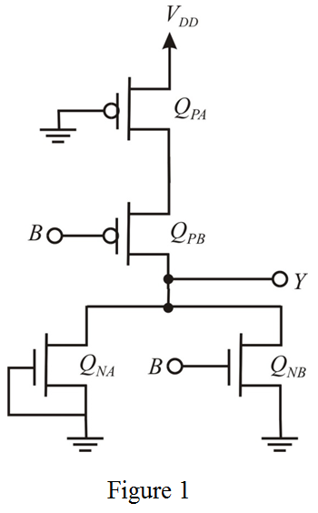
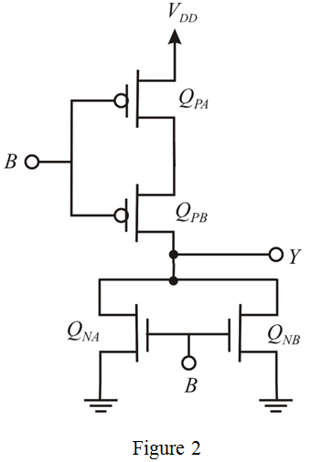

Step 1:
Refer to Figure 13.31 for a two-input CMOS NOR-gate in the text book.
For a two-input NOR gate, the  ratio of each NMOS transistor to be equal to that of the NMOS transistor of the basic inverter. That is, equals to
ratio of each NMOS transistor to be equal to that of the NMOS transistor of the basic inverter. That is, equals to .
.
The ratio of each PMOS transistor to be equals to two times of transistor of the basic inverter. That is, equals to.
transistor of the basic inverter. That is, equals to.
Thus, the relationship between for two-input CMOS NOR-gate is,
Step 2:
(a)
The input terminal  is connected to ground. The modified circuit diagram is shown in Figure 1.
is connected to ground. The modified circuit diagram is shown in Figure 1.

Step 3:
Consider the threshold voltage,  is. The transistors are in saturation-region and the transistor in triode-region.
is. The transistors are in saturation-region and the transistor in triode-region.
Write the general expression for the drain current in triode region.
The expression for drain current of transistor  is,
is,
Here, the voltage across the transistor is, .

Substitute  for
for  ,
,  for
for  and for in the equation.
and for in the equation.
.…… (1)
Step 4:
Write the general expression for the drain current in saturation region.

The expression for drain current of transistor is,
Substitute  for
for  , for
, for  and for
and for  in the equation.
in the equation.
.…… (2)
Step 5:
Write the general expression for the drain current in saturation region.
The expression for drain current of transistor is,
Substitute  for
for  in the equation.
in the equation.
.…… (3)
Substitute for  in equation (2).
in equation (2).
Step 6:
Substitute for in equation (1).
Substitute for  in the equation.
in the equation.
Since , one PMOS is full ON.
, one PMOS is full ON.
Thus, the value of gate threshold voltage, is .
Step 7:
(b)
The two inputs are connected together in Figure 13.31. The modified circuit diagram is shown in Figure 2.

Step 8:
The relationship between for two-input matched CMOS NOR-gate is,
.
Write the general expression for the drain current in saturation region.
The expression for drain current of PMOS transistor is,
Substitute  for
for  and
and  for
for  in the equation.
in the equation.
Step 9:
Write the general expression for the drain current in saturation region.
The expression for drain current of transistor NMOS transistor is,
Substitute  for
for  in the equation.
in the equation.
In Figure 2, the NMOS transistors connected in parallel. So, the two drain currents are added. In case of PMOS transistors, the drain current is same due to series connection.
Substitute  for and
for and  for in the equation.
for in the equation.
Thus, the value of gate threshold voltage,  is.
is.